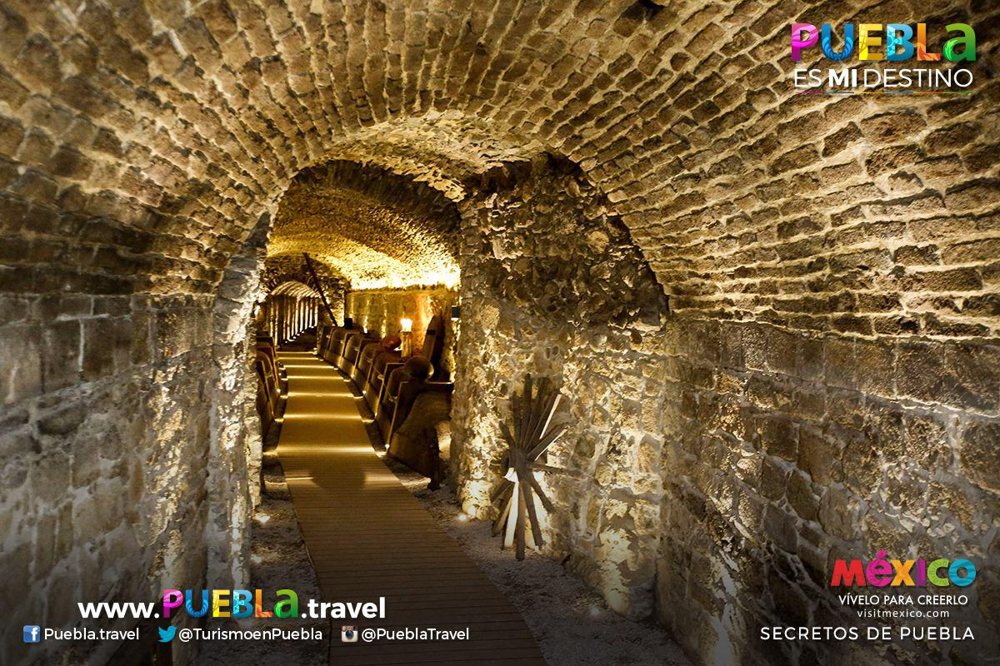

Batalla

fue un combate librado el 5 de mayo de 1862 en las cercanías de la ciudad de Puebla, entre los ejércitos de la República Mexicana, bajo el mando de Ignacio Zaragoza, y del Segundo Imperio Francés, dirigido por Charles Ferdinand Latrille, conde de Lorencez, durante la Segunda Intervención Francesa en México, cuyo resultado fue una victoria importante para los mexicanos ya que con unas fuerzas consideradas como inferiores lograron vencer a uno de los ejércitos más experimentados y respetados de su época. Pese a su éxito, la batalla no impidió la invasión del país, aunque sí que sería la primera batalla de una guerra que finalmente México ganaría. Los franceses regresarían al siguiente año, con lo que se libró una segunda batalla en Puebla en la que se enfrentaron 35 000 franceses contra 29 000 mexicanos (defensa que duró 62 días) y lograrían avanzar hasta la Ciudad de México, lo que permitió establecer el Segundo Imperio Mexicano. Finalmente, ante la incapacidad de consolidar un imperio y después de perder 11 000 hombres debido a la actividad guerrillera que nunca dejó de subsistir,1 los franceses se retiraron incondicionalmente del país en el año 1867.
Aplicacion seis, RPAS
Conflicto
la República de México se encontraba sumida en crisis y tenía una deuda con Francia, España e Inglaterra; deuda que por la crisis, Benito Juárez, presidente de la época decidió no pagar por el momento y solicitar una tregua de 2 años para pagarla.Esta decisión de no pagar por el momento, disgustó a los acreedores de la deuda y decidieron agruparse para invadir a la Republica de México y cobrarse sus deudas, adicionalmente, cada uno de estos 3 países tenían intereses mas allá de la deuda; tenían intereses económicos, mineros y de expansión de sus negocios, también de colonización de territorios.
Aplicacion seis, RPAS
Museos
PUEBLA
MUSEO INTERACTIVO DE LA BATALLA DEL 5 DE MAYO
El recorrido por el museo utiliza la tecnología más puntera para narrar las acciones militares y la biografía de héroes
nacionales como Negrete, Díaz y Zaragoza. Pantallas táctiles, proyecciones en 3-D y contenidos interactivos descargables en
dispositivos ofrecen una experiencia única al visitante.

3 MUSEOS
El Museo de Historia Mexicana, el Museo del Noreste (MUNE) y el Museo del Palacio, conforman el nuevo rostro desde el cual
el Gobierno del Estado de Nuevo León y la sociedad, promueven la divulgación de la historia, así como las formas de entender
y vivir nuestro pasado común. El Museo de Historia Mexicana fue el primer edificio en lo que hoy conocemos como el Paseo
Santa Lucía, un espacio detonante del turismo cultural que a su vez dio albergue a los 3 Museos desde los que se cuenta la
historia de México, del noreste, y de Nuevo León.
PASAJE HISTÓRICO DEL 5 DE MAYO
Recorre los más de 1 mil metros que unen al Pasaje ubicado en el Barrio de Xanenetla y al Pasaje en Los Fuertes.
Recorre Secretos de Puebla y conoce el Puente de Bubas, el Convento de San Francisco, la zona más antigua de la ciudad, la
Capilla de Santa Elena, así como los lavaderos de Almoloya, entre otros puntos.

Aplicacion seis, RPAS


 1
1 3
3 6
6